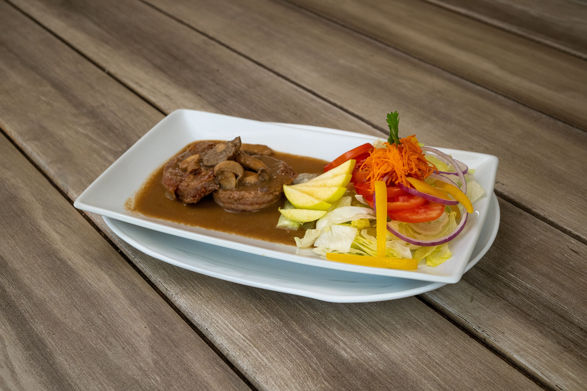
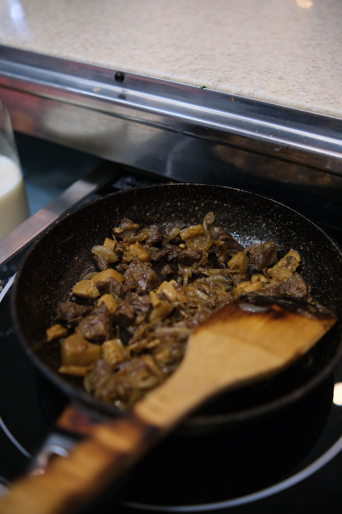
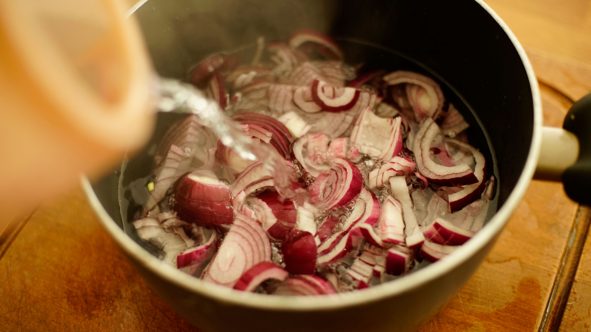
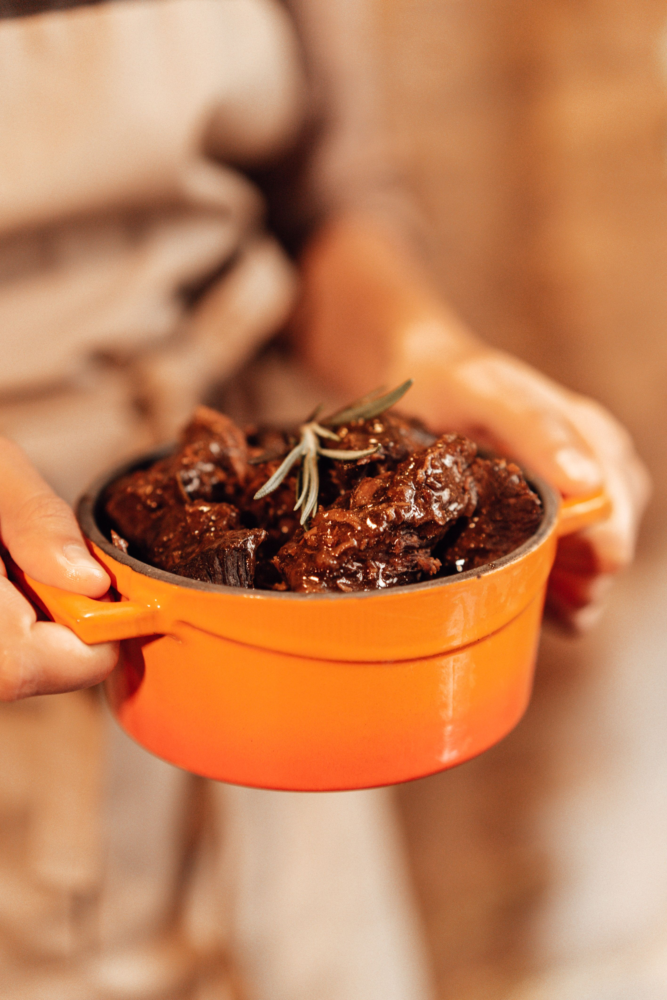

Carrillada de Cerdo Ibérico al Pedro Ximénez

La carrillada o carrillera es una pieza muscular magra situada en los laterales de la mandíbula del cerdo o de la ternera. Se caracteriza por un entramado notable de tejido conjuntivo que, al someterse a cocciones lentas y húmedas, se transforma en gelatina soluble, confiriendo a la carne una untuosidad tierna que se deshace con el tenedor.
El empleo del vino Pedro Ximénez, propio del marco vinícola de Montilla-Moriles y Jerez, aporta una profundidad aromática singular. Este vino dulce de uva pasificada proporciona notas de frutos secos, higos y caramelo tostado que equilibran el fondo salino del caldo de carne y las verduras pochadas del sofrito base.
La clave técnica de este guiso radica en sellar la carne a fuego fuerte para concentrar los jugos superficiales mediante la reacción de Maillard, retirar el exceso de grasa y cocer el conjunto a fuego suave durante un mínimo de hora y media. La reducción final de la salsa tamizada concentra todos los aromas sin necesidad de añadir espesantes artificiales.
Fases de la elaboración


